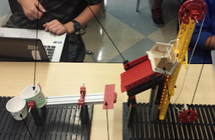

Projects
Project 1.1.6 Simple Compounds: September 17, 2014 - September 22, 2014

Course: Principles of Engineering 2014-2015
Partners: Madison Hildenbrand, Sean Last, Cindy Chang
Project 1.1.6 is a project for Principles of Engineering students to get familiarized with simple machines like levers, gears, wheels etc. In this project, we had to execute a task that we complete in our daily basis with at least four simple machines and only one human input source. Our task was to pour water into a cup. In our design using a wheel, we cranked up a box with a heavy metal ball in it. When the box reached the top of an inclined plane we built, it rolled down the inclined plane and hit a lever which tipped a cup. The cup had water and when it was tipped it poured water into a different cup. In this project I was mainly a builder. I did not work on the documentation a lot. The major problem our team faced was the ball wouldn't always hit the designated spot it was supposed to hit and the water would spill every where but the cup. Overall, this project taught me how different machines work and how to calculate mechanical advantage properly.